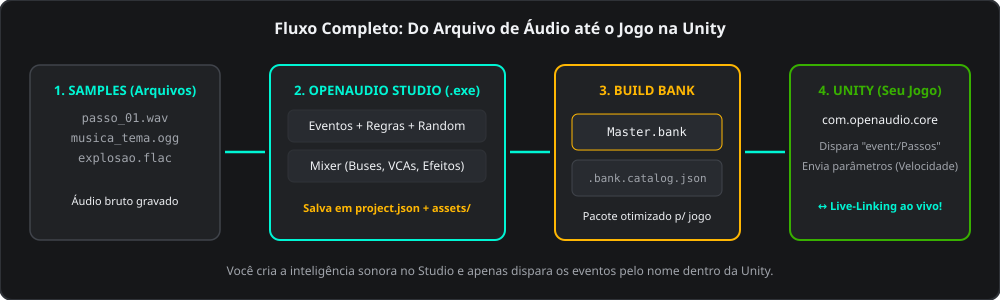

Capítulo 0 — Conceitos Básicos de Áudio Interativo
Nunca usou um programa de áudio para jogos? Sem problemas. Este capítulo explica, sem jargões complicados, toda a teoria essencial para você entender o OpenAudio Studio e a integração com a Unity.
1. Por que usar o OpenAudio Studio em vez de tocar arquivos .wav direto?
Um arquivo .wav ou .mp3 comum é estático: toda vez que você dá play, ele toca exatamente igual do início ao fim.
Em um jogo ou aplicação interativa, isso cansa o ouvido rapidamente (imagine ouvir o mesmo som de passo idêntico 500 vezes!).
O OpenAudio Studio permite transformar arquivos de áudio brutos em Eventos inteligentes: eles podem sortear variações diferentes, mudar de afinação automaticamente, repetir em loop enquanto um botão estiver pressionado ou abaixar a música suavemente quando um diálogo começar.
Deseja entender em detalhes a ontologia de eventos, camadas, polifonia, voice stealing e a física de parâmetros locais vs. globais? Consulte a página dedicada de Fundamentos: Eventos e Parâmetros. Para entender a matemática de soma de sinal, faders e a distinção cirúrgica entre Buses e VCAs, consulte Fundamentos: Buses, VCAs e Snapshots.

.bank e a Unity apenas dispara os eventos pelo nome.
2. As 4 Medidas Fundamentais que Aparecem em Toda a Interface
Volume em Decibéis (dB)
Ao contrário de uma porcentagem de 0% a 100%, áudio profissional usa Decibéis (dB), porque o ouvido humano percebe volume em escala logarítmica. No OpenAudio Studio:
0.0 dB= Ganho unitário neste controle. A faixa, o evento e a mixagem ainda podem mudar o nível final.- Valores negativos (
-6 dB,-12 dB,-24 dB) = som mais baixo. -80 dB(ou menor) = silêncio absoluto (o motor zera o áudio completamente).- Valores positivos (
+3 dB,+6 dB) = som amplificado (cuidado para não distorcer!).
0.0 dB
Este controle multiplica a amplitude por 1.
-6.0 dB
A amplitude cai a aproximadamente 50%. A sensação de volume depende do sinal, da escuta e do restante da mixagem.
Pan (Posicionamento Esquerda / Direita)
Pan (Panorama) controla quanto do som vai para a caixa de som/fone esquerdo (L) ou direito (R).
0.0 (ou C, Centro) envia o mesmo volume para os dois lados; valores negativos puxam para a esquerda e positivos para a direita.
Pitch em Semitons (st)
Pitch altera a altura (grave/agudo) e a velocidade da reprodução. A unidade usada no Studio é o Semitom (st) — a mesma distância entre duas teclas vizinhas de um piano.
+12 st
O som sobe exatamente 1 oitava (fica bem mais agudo e toca 2× mais rápido).
-2 st a +2 st (aleatório)
Pequenas variações de altura podem reduzir a repetição perceptível. O intervalo adequado depende do material.
Fade In, Fade Out e Loop
- Fade In: rampa suave do silêncio até o volume normal no início do som (evita "estalos" ou entradas bruscas).
- Fade Out: rampa suave do volume normal até o silêncio ao terminar ou parar o som.
- Loop: repetição contínua de um trecho ou do som inteiro (muito usado em música de fundo, chuva, vento ou motor de carro).
3. Os Blocos de Construção do OpenAudio Studio
| Conceito | Analogia Simples | Exemplo Real |
|---|---|---|
| Sample | O ingrediente bruto | assets/tiro_01.wav |
Evento (event:/) |
A receita completa que o jogo pede para tocar | event:/Armas/Disparo |
| Faixa (Track) | Camadas simultâneas dentro de um evento | Track 1: Estalo da arma · Track 2: Eco metálico |
| Parâmetro | Um botão/variável que o jogo envia para mudar o som | Velocidade (0 a 100) ou Superficie (Grama, Pedra) |
Bus (bus:/) |
Um canal que recebe e soma áudio. O fader e os efeitos podem agir sobre a mistura. | bus:/SFX, bus:/Musica, bus:/Vozes |
VCA (vca:/) |
Um controle que multiplica o ganho de vários barramentos e preserva seus faders individuais. | Slider "Volume Geral de Efeitos" no menu do jogo |
Snapshot (snapshot:/) |
Uma "cena" temporária de mixagem | snapshot:/Pausa abaixa a música e aplica filtro abafado |
Bank (.bank) |
O arquivo final compilado que vai para a Unity | ExampleGameProject.bank + ExampleGameProject.bank.catalog.json |
Ganho, nível do sinal e margem
Um ajuste em dB expressa uma relação. Em -6 dB, um controle aplica cerca de 0,5 de ganho linear. Em +6 dB, aplica cerca de 2. O motor multiplica os ganhos que o som encontra pelo caminho. Um evento a -6 dB que passa por um barramento a -6 dB chega ao estágio seguinte com aproximadamente um quarto da amplitude inicial, antes de outros processamentos.
dBFS mede o sinal em relação ao máximo digital. Um fader em 0 dB aplica ganho unitário. Um medidor em 0 dBFS indica que o pico chegou à referência máxima. Em uma mixagem de jogo, sons imprevisíveis podem somar. A distância entre o pico atual e o limite é a margem ou headroom.
Para seguir o sinal da faixa ao Master, experimentar um VCA e comparar com um snapshot, veja Barramentos, VCAs e snapshots.
Mini-Glossário deste Capítulo
- DAW (Digital Audio Workstation): programa usado para editar, organizar e mixar áudio.
- dBFS / dB: unidade logarítmica de volume digital onde
0 dBé o teto máximo antes de distorcer. - Runtime: o momento em que o jogo está rodando de fato (dentro da Unity).